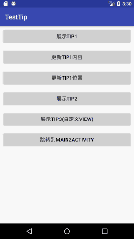
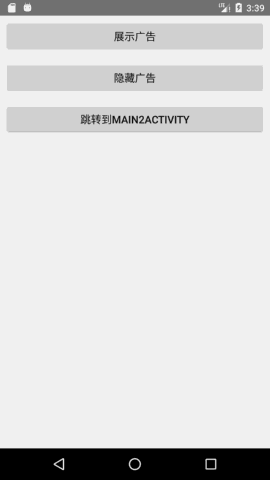

1 在页面任意位置展示一个漂浮view
1.1 需求背景
前几天接到一个小需求，要在app某页面中显示一个漂浮的文字提示。本来想就弹个Toast的，但PM还要求文字提示支持手动关闭(比如触摸屏幕任意位置关闭，或者点击文字提示后关闭)，那么系统的Toast就不能用了。另一方面，因为需要弹出文字提示的页面无论页面展示逻辑还是业务逻辑都异常复杂，所以不太希望去它的布局文件中添加view，也不希望对其代码逻辑有过多的修改——最好是能够一行代码展示文字提示，一行代码移除文字提示。
最终确定的方案是使用子窗口。为什么使用子窗口而不是顶级窗口(系统级窗口)呢？因为子窗口有与父窗口相同的生命周期。当文字提示以页面的子窗口的形式存在时，当用户按下返回键关闭页面，文字提示也会跟着页面一起消失，而不是继续留在屏幕上。
写了一个单独的Tip类来实现这个功能，效果如下：

demo代码: http://download.csdn.net/download/al4fun/10004088
1.2 使用方式
基本使用方式：
1
2
3
4
5
6
7
|
//展示tip
Tip tip = new Tip(view) //view：需要展示tip的页面中的任意一个view，用来获取父窗口的windowToken
.content("文字提示")
.show();
//关闭tip
tip.remove();
|
可选项：
1
2
3
4
5
6
7
8
|
Tip tip = new Tip(view)
.content("文字提示")
.location(Gravity.LEFT | Gravity.TOP, 0, 0) //指定tip在父窗口中的位置，若不指定，则居中显示
.clickToRemove(true) //点击tip时tip消失
.show();
tip.updateContent("新文字提示"); //更新tip的显示内容
tip.updateLocation(Gravity.CENTER, 0, 0); //更新tip的位置
|
自定义tip的视图：
1
2
3
4
|
View contentView = View.inflate(MainActivity.this, R.layout.view_tip, null);
Tip tip = new Tip(view)
.content(contentView)
.show();
|
1.3 代码实现
Tip类的实现很简单，仅有200来行代码，对WindowManager稍有了解的朋友应该很容易理解。有两个地方需要稍微解释一下：
1 获取不到windowToken
要展示一个子窗口，需要获取父窗口的windowToken。我们获取windowToken的方式是，在show()方法中调用viewInParentWindow的getWindowToken方法(viewInParentWindow就是创建Tip对象时传递给构造方法的那个view)。这里可能会出现一种情况，就是如果show()方法被调用得过早的话，比如在Activity的onCreate方法中，此时viewInParentWindow尚未被attach到父窗口中，那么viewInParentWindow.getWindowToken()会返回null，使用这个空的windowToken来显示tip会导致程序抛出异常并崩溃。如何解决这个问题呢？这里采用了一种简单粗暴的方式，就是使用一个定时器去检查viewInParentWindow.getWindowToken()的返回值，如果为null的话，就0.5s后再去检查，如果不为null，则使用这个windowToken来展示tip：
1
2
3
4
5
6
7
8
9
10
11
12
13
14
15
16
17
18
19
|
//如果show()调用得太早，比如在Activity的onCreate方法中，此时viewInParentWindow尚未被attach到父窗口中，
//那么viewInParentWindow.getWindowToken()会返回null
//因此在后面操作开始之前必须确保getWindowToken()已有非null值，每0.5s检查一次
final Timer timer = new Timer();
timer.scheduleAtFixedRate(new TimerTask() {
@Override
public void run() {
if (viewInParentWindow.getWindowToken() != null) {
timer.cancel();
new Handler(applicationContext.getMainLooper()).post(new Runnable() {//切换到主线程
@Override
public void run() {
//tip展示逻辑
}
});
}
}
}, 0, 500);
|
2 窗体泄露(WindowLeaked)
当用户关闭页面时，如果此页面中有子窗口（也就是tip）正在展示的话，那么子窗口会被自动关闭，同时会抛出一个WindowLeaked异常。虽然这个异常并不会造成程序崩溃之类的严重后果，但logcat里鲜红的异常日志看着也是很不爽的。解决窗体泄露的办法是在页面关闭之前，先将页面中展示的tip移除，比如在activity的onDestroy方法中调用tip的remove方法。但实际开发中的情况是比较复杂的，有时候要想确保在页面关闭前调用tip的remove方法并不太容易。那么不妨换个角度：能不能让tip自己去监听页面的关闭，并在页面关闭前将自己移除呢？其实这很容易做到：
1
2
3
4
5
6
7
8
9
10
11
|
viewInParentWindow.addOnAttachStateChangeListener(new View.OnAttachStateChangeListener() {
@Override
public void onViewAttachedToWindow(View v) {
}
@Override
public void onViewDetachedFromWindow(View v) {
remove();
}
});
|
当页面关闭时，页面中所有的view(包括viewInParentWindow)都会被从页面所在的窗口中detach掉，那么onViewDetachedFromWindow就会被调用，此时调用tip的remove方法将其移除就可以避免窗体泄露(windowLeaked)。
完整代码
1
2
3
4
5
6
7
8
9
10
11
12
13
14
15
16
17
18
19
20
21
22
23
24
25
26
27
28
29
30
31
32
33
34
35
36
37
38
39
40
41
42
43
44
45
46
47
48
49
50
51
52
53
54
55
56
57
58
59
60
61
62
63
64
65
66
67
68
69
70
71
72
73
74
75
76
77
78
79
80
81
82
83
84
85
86
87
88
89
90
91
92
93
94
95
96
97
98
99
100
101
102
103
104
105
106
107
108
109
110
111
112
113
114
115
116
117
118
119
120
121
122
123
124
125
126
127
128
129
130
131
132
133
134
135
136
137
138
139
140
141
142
143
144
145
146
147
148
149
150
151
152
153
154
155
156
157
158
159
160
161
162
163
164
165
166
167
168
169
170
171
172
173
174
175
176
177
178
179
180
181
182
183
184
185
186
187
188
189
190
191
192
193
194
195
196
197
198
199
200
201
202
203
204
205
206
207
208
209
210
211
212
213
214
215
216
217
218
219
220
221
222
223
224
225
226
227
228
229
230
231
232
233
234
235
236
237
238
239
240
|
/**
* 作为子窗口存在的tip，依附于父窗口，当父窗口不可见时，tip也不可见。
*/
public class Tip {
private static final String TAG = "Tip";
private Context applicationContext;
private WindowManager wm;
private View viewInParentWindow;//父窗口中的一个view，通过此view来获取父窗口的各种信息
private View content;
private Size size;
private Location location;
private boolean clickToRemove = false;
private static class Size {
int width, height;
public Size(int width, int height) {
this.width = width;
this.height = height;
}
}
private static class Location {
int gravity, offsetX, offsetY;
Location(int gravity, int offsetX, int offsetY) {
this.gravity = gravity;
this.offsetX = offsetX;
this.offsetY = offsetY;
}
}
/**
* @param viewInParentWindow:父窗口中的一个view。因为tip是作为子窗口而存在的，因此必须传入一个父窗口中的view，用以获取父窗口的各种信息。
*/
public Tip(@NonNull View viewInParentWindow) {
applicationContext = viewInParentWindow.getContext().getApplicationContext();
wm = (WindowManager) applicationContext.getSystemService(Context.WINDOW_SERVICE);
this.viewInParentWindow = viewInParentWindow;
this.viewInParentWindow.addOnAttachStateChangeListener(new View.OnAttachStateChangeListener() {
@Override
public void onViewAttachedToWindow(View v) {
}
//当父窗口被关闭时，父窗口中的view会被detach，那么此方法就会被调用，
//此时需要移除tip，防止窗口泄露(windowLeaked)。
@Override
public void onViewDetachedFromWindow(View v) {
remove();
}
});
}
/**
* 以默认的textView作为tip的内容
*/
public Tip content(@NonNull String message) {
this.content = buildDefaultView(message);
return this;
}
private View buildDefaultView(@NonNull String message) {
TextView textView = new TextView(applicationContext);
textView.setText(message);
textView.setTextSize(TypedValue.COMPLEX_UNIT_DIP, 16);
textView.setTextColor(Color.parseColor("#FFFFFF"));
textView.setBackgroundColor(Color.parseColor("#000000"));
float density = applicationContext.getResources().getDisplayMetrics().density;
textView.setPadding((int) (20 * density), (int) (10 * density), (int) (20 * density), (int) (10 * density));
return textView;
}
/**
* 以参数view作为tip的内容
*/
public Tip content(@NonNull View view) {
this.content = view;
return this;
}
/**
* 设置Tip的尺寸
* <p>
* 注意：
* 1.一般情况下不需要调用此方法，Tip的默认尺寸为wrap_content
* 2.极少数情况下,当通过content(View)传入的view尺寸过大时，可能会出现显示异常(原因暂不明确，可能与系统对子窗口的限制有关)，此时调用此方法可能会解决问题
*/
public Tip size(int width, int height) {
this.size = new Size(width, height);
return this;
}
/**
* 设置tip的显示位置，若不调用此方法，那tip的默认位置就是居中
*
* @param gravity:对齐方式，如"Gravity.LEFT|Gravity.TOP"
* @param offsetX:在对齐方式基础上的横向偏移量，单位为像素
* @param offsetY:在对齐方式基础上的纵向偏移量，单位为像素
*/
public Tip location(int gravity, int offsetX, int offsetY) {
this.location = new Location(gravity, offsetX, offsetY);
return this;
}
/**
* 是否要点击移除（默认否）
*/
public Tip clickToRemove(boolean clickToRemove) {
this.clickToRemove = clickToRemove;
return this;
}
//-----------------------------------------------------------------------------
/**
* 展示tip
*/
public Tip show() {
if (content == null) {
Log.e(TAG, "尚未设置显示内容，请先调用content(String)或content(View)");
return this;
}
//如果show()调用得太早，比如在Activity的onCreate方法中，此时viewInParentWindow尚未被attach到父窗口中，
//那么viewInParentWindow.getWindowToken()会返回null
//因此在后面操作开始之前必须确保getWindowToken()已有非null值，每0.5s检查一次
final Timer timer = new Timer();
timer.scheduleAtFixedRate(new TimerTask() {
@Override
public void run() {
if (viewInParentWindow.getWindowToken() != null) {
timer.cancel();
new Handler(applicationContext.getMainLooper()).post(new Runnable() {//切换到主线程
@Override
public void run() {
WindowManager.LayoutParams layoutParams = new WindowManager.LayoutParams(
WindowManager.LayoutParams.WRAP_CONTENT, WindowManager.LayoutParams.WRAP_CONTENT,
0, 0, PixelFormat.TRANSPARENT);
layoutParams.flags = WindowManager.LayoutParams.FLAG_NOT_TOUCH_MODAL | WindowManager.LayoutParams.FLAG_NOT_FOCUSABLE;
layoutParams.type = WindowManager.LayoutParams.TYPE_APPLICATION_PANEL;//子窗口
layoutParams.token = viewInParentWindow.getWindowToken();//必须给子窗口设置token，即其父窗口的token
if (size != null) {
layoutParams.width = size.width;
layoutParams.height = size.height;
}
if (location != null) {
layoutParams.gravity = location.gravity;
layoutParams.x = location.offsetX;
layoutParams.y = location.offsetY;
}
wm.addView(content, layoutParams);
if (clickToRemove) {
content.setOnClickListener(new View.OnClickListener() {
@Override
public void onClick(View v) {
remove();
}
});
}
}
});
}
}
}, 0, 500);
return this;
}
/**
* tip是否正在被显示
*/
public boolean isShowing() {
return ViewCompat.isAttachedToWindow(content);
}
/**
* 更新tip的内容
* <p>
* 仅适用于通过content(String)创建的tip
*/
public void updateContent(@NonNull String message) {
if (content == null) {
Log.e(TAG, "content为null");
return;
}
if (!ViewCompat.isAttachedToWindow(content)) {
Log.e(TAG, "content并未显示在任何窗口中");
return;
}
if (!(content instanceof TextView)) {
Log.e(TAG, "content不是TextView");
return;
}
TextView tv = (TextView) content;
tv.setText(message);
}
/**
* 更新tip的显示位置
*
* @param gravity:对齐方式，如"Gravity.LEFT|Gravity.TOP"
* @param offsetX:在对齐方式基础上的横向偏移量，单位为像素
* @param offsetY:在对齐方式基础上的纵向偏移量，单位为像素
*/
public void updateLocation(int gravity, int offsetX, int offsetY) {
if (content == null) {
Log.e(TAG, "content为null");
return;
}
if (!ViewCompat.isAttachedToWindow(content)) {
Log.e(TAG, "content并未显示在任何窗口中");
return;
}
WindowManager.LayoutParams layoutParams = (WindowManager.LayoutParams) content.getLayoutParams();
layoutParams.gravity = gravity;
layoutParams.x = offsetX;
layoutParams.y = offsetY;
wm.updateViewLayout(content, layoutParams);
}
/**
* 移除tip
*/
public void remove() {
if (content != null && ViewCompat.isAttachedToWindow(content)) {
wm.removeViewImmediate(content);
}
}
}
|
1.4 GlobalTip
在最开始提供的demo代码中，除了通过子窗口实现漂浮view的Tip类之外，还有一个通过顶级窗口来实现漂浮view的GlobalTip类。顶级窗口和子窗口的区别在于，顶级窗口不依赖于app中的任何页面，它的生命周期等于app的生命周期，也就是说只有当整个app关闭时，顶级窗口才会被自动关闭。GlobalTip类的实现与Tip类大同小异，就不另作说明了。
2 由服务器灵活配置的浮动广告
2.1 需求背景
这是几个月以前team leader给的一个小任务，要求写一个工具类，能够在app中方便地展示浮动广告（其实就是一些活动信息，比如节日活动之类的），浮动广告的展示逻辑要求与app自身的逻辑良好解耦，以便在多个app中进行复用，此外，浮动广告的内容、尺寸、展示位置等信息均通过服务器来配置，这样可以做到随时更新，而无需app发版。
最终的效果：

demo代码见: http://download.csdn.net/download/al4fun/10004094
2.2 代码实现
这大概只能算是一个草稿，没有在项目中实际使用过（因为需求很快就被砍掉了），也没有考虑性能、兼容性等问题，仅供参考：
1
2
3
4
5
6
7
8
9
10
11
12
13
14
15
16
17
18
19
20
21
22
23
24
25
26
27
28
29
30
31
32
33
34
35
36
37
38
39
40
41
42
43
44
45
46
47
48
49
50
51
52
53
54
55
56
57
58
59
60
61
62
63
64
65
66
67
68
69
70
71
72
73
74
75
76
77
78
79
80
81
82
83
84
85
86
87
88
89
90
91
92
93
94
95
96
97
98
99
100
101
102
103
104
105
106
107
108
109
110
111
112
113
114
115
116
117
118
119
120
121
122
123
124
125
126
127
128
129
130
131
132
|
public abstract class BaseAdManager {
private static final String TAG = "BaseAdManager";
protected View viewInParentWindow;
OnContentClickListener listener;
ArrayList<AdInfo> adInfos;//从服务器获取的广告配置信息
ArrayList<Tip> tips = new ArrayList<>();//正在展示的广告列表
/**
* 展示广告
*
* @param viewInParentWindow 展示广告的页面中的一个view
* @param listener 广告图片的点击监听
*/
public void showAds(@NonNull final View viewInParentWindow, @Nullable OnContentClickListener listener) {
this.viewInParentWindow = viewInParentWindow;
this.listener = listener;
new Thread(new Runnable() {
@Override
public void run() {
adInfos = getAdInfos();//getAdInfos():同步从服务器获取广告配置信息，耗时操作
new Handler(viewInParentWindow.getContext().getMainLooper()).post(new Runnable() {//切换到主线程
@Override
public void run() {
show();
}
});
}
}).start();
}
private void show() {
if (adInfos != null) {
removeAll();//若已有正在展示的广告，则先移除
for (final AdInfo adInfo : adInfos) {
View adView = View.inflate(viewInParentWindow.getContext().getApplicationContext(), R.layout.view_ad, null);
//加载广告图片
ImageView iv_content = (ImageView) adView.findViewById(R.id.iv_content);
Picasso.with(viewInParentWindow.getContext().getApplicationContext())
.load(adInfo.imageUrl)
.resize(adInfo.width, adInfo.height)
.into(iv_content);
//展示广告
final Tip tip = new Tip(viewInParentWindow)
.content(adView)
.size(adInfo.width, adInfo.height)
.location(adInfo.gravity, adInfo.offsetX, adInfo.offsetY)
.show();
tips.add(tip);//将广告加入广告列表，removeAll()方法会遍历这个广告列表
iv_content.setOnClickListener(new View.OnClickListener() {
@Override
public void onClick(View v) {
if (listener != null) {
listener.onAdContentClick(adInfo.detail);
}
}
});
//广告图片右上角的x按钮
adView.findViewById(R.id.iv_close).setOnClickListener(new View.OnClickListener() {
@Override
public void onClick(View v) {
tip.remove();
tips.remove(tip);
}
});
}
}
}
/**
* 移除全部广告
*/
public void removeAll() {
for (Tip tip : tips) {
tip.remove();
}
tips.clear();
}
//---------------------------------------------------------------------------
/**
* 广告图片的点击监听
*/
public interface OnContentClickListener {
void onAdContentClick(String detail);
}
/**
* 广告配置信息
*/
public class AdInfo {
String imageUrl;
String detail;
int width, height;
int gravity, offsetX, offsetY;
/**
* 广告配置信息
*
* @param imageUrl:广告图片的url
* @param detail:广告详情。通常是一个url，指向广告详情页面
* @param width:广告图片展示的宽度，单位为px
* @param height:广告图片展示的高度，单位为px
* @param gravity:广告图片在页面中的位置，例如"Gravity.LEFT|Gravity.TOP"
* @param offsetX:广告图片位置的横向偏移量，单位为px
* @param offsetY:广告图片位置的纵向偏移量，单位为px
*/
public AdInfo(String imageUrl, String detail, int width, int height, int gravity, int offsetX, int offsetY) {
this.imageUrl = imageUrl;
this.detail = detail;
this.width = width;
this.height = height;
this.gravity = gravity;
this.offsetX = offsetX;
this.offsetY = offsetY;
}
}
/**
* 同步从服务器获取广告配置信息
* <p>
* 以okhttp为例，使用call.execute(...)而不是call.enque(...)
*/
public abstract ArrayList<AdInfo> getAdInfos();
}
|
BaseAdManager是一个抽象类，其中包含抽象方法getAdInfos()，子类需要覆写这个方法并返回需要展示的广告的配置信息，即ArrayList<AdInfo>。通常的做法是，在getAdInfos()方法中直接使用网络框架的同步方法从服务器获取广告配置信息（比如okhttp的call.execute）。
广告配置信息AdInfo中，除了广告的尺寸和位置信息之外，还包含String imageUrl和String detail这两个字段：imageUrl是广告图片的url；而detail是该广告的详细信息，通常它是一个指向广告详情页的url，当广告图片被用户点击时，detail会被传递给BaseAdManager的使用者，BaseAdManager的使用者可以使用浏览器或webView打开这个url，以便向用户展示广告的详细信息。
BaseAdManager的工作流程：当用户通过BaseAdManager的子类实例调用其showAds(...)方法时，BaseAdManager会通过子类实现的getAdInfos()从服务器获取广告配置信息，然后根据广告配置信息创建一系列Tip对象并展示出来。
2.3 使用示例
首先是写一个子类实现BaseAdManager。在下面的代码中，因为没有服务器支持，所以直接手写了一个ArrayList<AdInfo>，而实际使用的话，ArrayList<AdInfo>应该是从服务器同步获取的：
1
2
3
4
5
6
7
8
9
10
11
12
13
14
15
16
17
18
19
20
21
22
23
|
public class AdManager1 extends BaseAdManager {
private static final String TAG = "AdManager1";
@Override
public ArrayList<AdInfo> getAdInfos() {
ArrayList<AdInfo> adInfos = new ArrayList<>();
adInfos.add(new AdInfo(
"https://s1.ax1x.com/2017/09/27/lyHYR.png",
"跳转到详情页1",
300,
300,
Gravity.RIGHT, 0, 0
));
adInfos.add(new AdInfo(
"https://s1.ax1x.com/2017/09/27/ly7k9.jpg",
"跳转到详情页2",
1080,
567,
Gravity.BOTTOM, 0, 0
));
return adInfos;
}
}
|
创建子类实例并调用showAds(...)方法：
1
2
3
4
5
6
7
8
9
10
11
|
//展示广告
AdManager1 adManager1 = new AdManager1();
adManager1.showAds(anyView, new BaseAdManager.OnContentClickListener() {
@Override
public void onAdContentClick(String detail) {
Toast.makeText(MainActivity.this, detail, Toast.LENGTH_SHORT).show();
}
});
//隐藏广告
adManager1.removeAll();
|